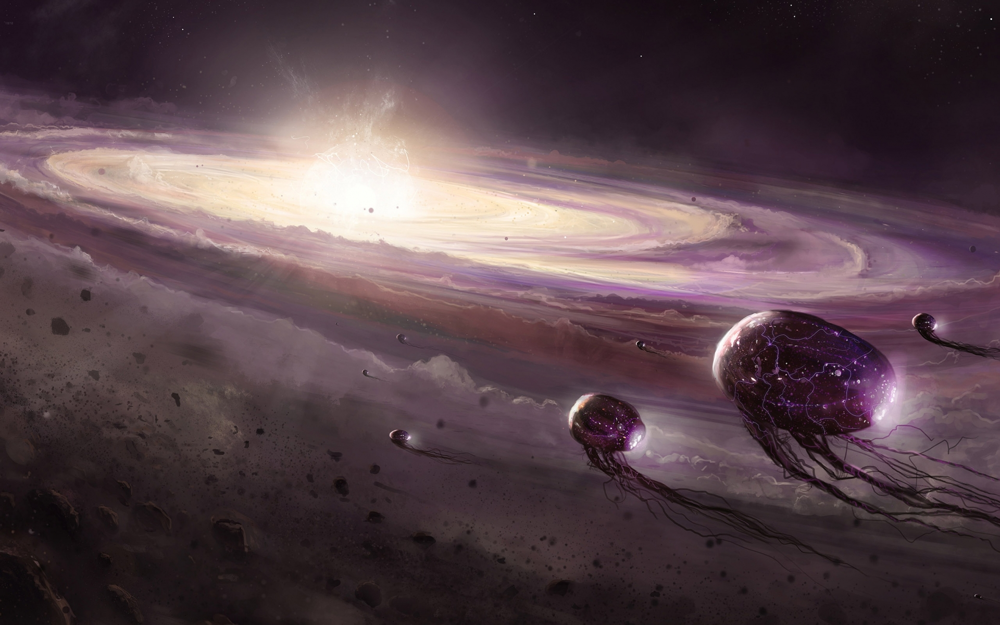

    <div class="container mlintro" ng-controller='MLIntroController'>
      <div class = "container index">
        <div class="chapterTitle">
          <h3>Hitchhikers Guide to Classifying Galaxies</h3>
          <h4>An Epic Walkthrough of Implenting Machine Learning Algorithms</h4>
        </div>
        <div class="row featurette">
          <div class="col-md-5">
            
          </div>
          <div class="col-md-7">
            <h2 class="featurette-heading">Our Origins</h2>
          </div>
            <p class="lead">Called into action by <a href="http://www.galaxyzoo.org/#/">Galaxy Zoo Headquarters</a>, our heroes began preparing to explore the universe, searching for signs of sentient. While travelling, they planned to be cryogenically frozen only to be awakened during critical moments of their mission.  Knowing that <a href="https://en.wikipedia.org/wiki/Galaxy_morphological_classification">galaxy shape and morphological features </a>are strong indicators of sentient life, our heroes devised a plan to train their ship's computer to classify galaxies. The more accurate their ship could become in detecting galactic features, the more fruitful our heroes expected their trip to be. Ready for adventure, they set off on their quest.</p>
          </div>
        </div>
      </div>
      